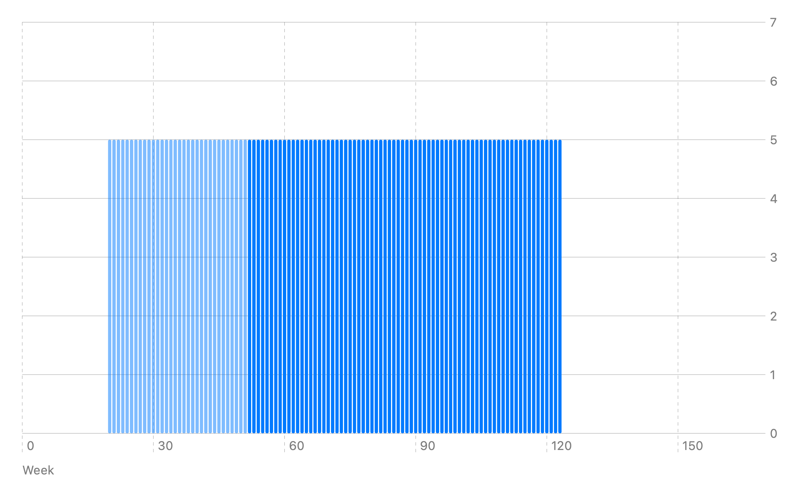
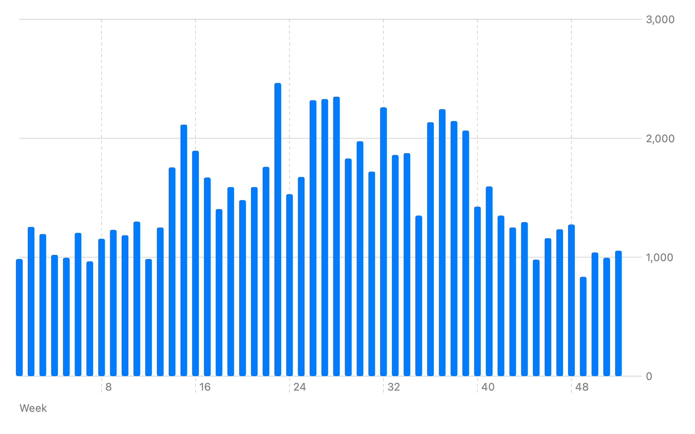

Intro to Valuations
You may have heard of a private company being acquired (purchased) for $100 million, or $2 billion. Or a public company is valued at $70 billion. In this article, I seek to answer the question: Where do these numbers come from?
Value of food
Clara uses about 10 eggs a week. Sometimes she makes scrambled eggs, sometimes she makes her own pasta. Clara pays $0.50 per egg. She's happy to pay this price to have some variety in her breakfasts.
I start with this example to establish that there are goods and services that people value. Sometimes when we look at the modern economy, we may feel that it's all made up — I hope this example demonstrates that at least some things do have value. (Even if we imagine a society that is highly communal, does not utilize currency, or think in terms of capital, that society still needs food at the very least, and probably enjoys other goods and services.)
Value of a hen
Clara lives on a fairly large field and she's considering getting some chickens of her own so she doesn't have to buy eggs. She figures the walk to and from the farm once a week is probably the same amount of time it would take to collect the eggs each morning.
Not knowing much else about chickens, Clara asks the farmers how many eggs a hen lays. The farmer replies: “It depends. Maybe about 5 or 6 a week for 2 years.”
Since Clara doesn't have any other costs to having the hens (they'll be able to eat grains and other food already in her field, and she's already accounted for the time spent to collect the eggs), she can value each hen at: 5 eggs per week times 52 weeks per year times 2 years equals 520 eggs (at $0.50 per egg, that's $260).
Eggs laid per week, by hen age
Clara can use this model to determine how much she's willing to pay for a hen of any given age. For any hen up to the age of 20 weeks, Clara would get $260 worth of eggs.
Now let's say Clara is offered a hen that's 1 year (52 weeks) old:
Eggs laid per week, hen received at 52 weeks

Clara thinks the hen would lay eggs from 52 weeks (when she receives the hen) to 124 weeks old. That's weeks times 5 eggs per week is 360 eggs (at $0.50 per egg, that's $180).
In this section, we've seen how Clara could value a hen. If a hen did not lay eggs, she wouldn't have much interest in a hen, however since a hen does provide her with eggs (which she wants), she values having a hen.
Value of a business
Clara started building as a hobby. She built a seesaw, a small “merry-go-round”, a bench, and other projects like this. She has them in her front yard, and when people came over, kids seemed to enjoy playing with these items that she's built. She decided to build a fence around her yard (it's a large front yard) so kids could run around without the adults worrying too much.
A few years ago, Clara decided to open this play area to the public: she charges $5 per child per hour. Adults can stay with their kids in the play area, or they can drop off their kids and come back. Clara has a great reputation amongst the town of keeping the kids safe.
Clara is reviewing how much money people have paid for the play area in the last year, on a weekly basis:
Play area revenue per week

During the colder days, there are noticeably fewer kids that come out to the play area.
The technical term for “how much money people have paid” is “revenue”. If we add up all 52 weeks in this chart, we see that the play area has generated $79,605 in revenue.
Clara spent $500 over the year to keep the play area looking nice (upkeep).
Intuitively, Clara can keep all of the remaining money, after paying for the upkeep. However, in order to reasonably value the play area as a business, she must value her time as an employee. Clara uses the following reasoning: “If I were to hire someone to do the work I've been doing- keeping an eye on the kids and maintaining the play area- how much would I pay that person?” In this reasoning, Clara is thinking of herself as the business owner, hiring an employee. She has effectively hired herself. Clara thinks it would be fair to pay herself $1,250 per week, which comes out to $65,000 per year.
Here's the accounting for the year:
| Description | Value |
|---|---|
| Revenue | +$79,605 |
| Clara (salary) | −$65,000 |
| Upkeep | −$500 |
| Profit | +$14,105 |
“Profit” is the technical term for money that's left over after paying all the expenses. In this case, Clara's salary and the upkeep are expenses.
So, the play area generated $14,105 in profits for the year. Clara estimates that the play area can continue to generate this profit for about 5 years. After that, maybe there's something else that people will be interested in and interest in the play area will dwindle.
Using this logic, the value of the play area (as a company) would be: $14,105 per year times 5 years equals $70,525.
The owner of a company collects the profits from the company. Similar to whomever owned the hen would collect the eggs that the hen laid.
Why would someone purchase a company? With a hen, you're paying for a hen, and then over time the hen gives you eggs, which have underlying value. With a company, you're paying for a company, and over time the company gives you… the same amount of money. This doesn't yet seem like a very enticing trade.
A traveler, Jenny, comes through the town and visits Clara's play area. Jenny runs a similar outdoor business in her town where children often come to play. Jenny sells watermelon at her business during the summer. Jenny thinks if Clara's play area were to sell watermelon during the summer as well, it would bring in an additional $1,200 a year in profit. Using Clara's projection of 5 years, that would be an additional $1,200 a year times 5 years equals $6,000. Adding that to Clara's original estimate of $70,525, Jenny's valuation is $76,525.
Jenny could ask Clara if she would like to sell her business to Jenny for $75,000. Clara would likely agree, since that's more than the $70,525 Clara is currently expecting the business will generate.
In this section, we've valued a business by adding up all of the profits we expect that business to generate over its lifetime.